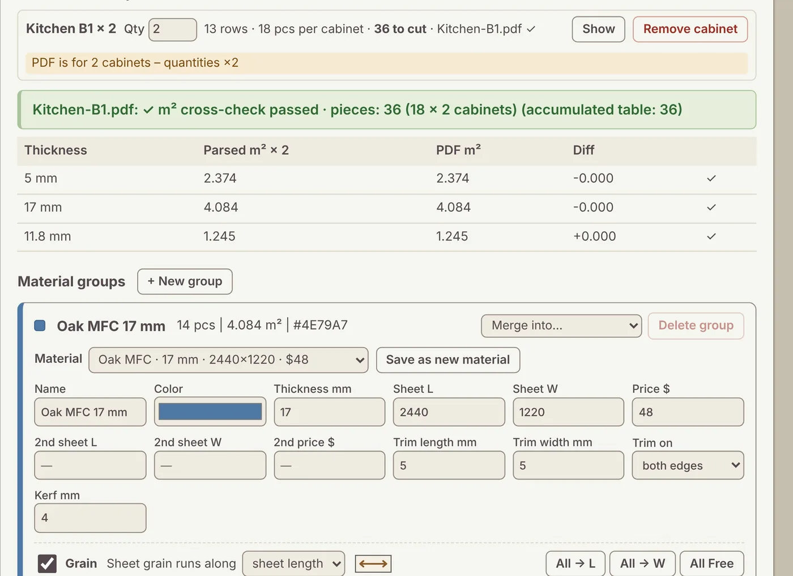

From Blum's Cabinet Configurator to a cutting plan in a minute.
Drop in the PDF from Blum and get a panel-saw layout for every sheet, the boards to order and the material cost. Built by a cabinet maker for his own shop.
One-time price, no subscription. 14-day money-back guarantee.
Cut order
- Rip at 490
- Rip at 490
- Crosscut at 780
- Crosscut at 780
- Crosscut at 716
- The same on the second strip
See it in 90 seconds
How it goes
Download the PDF from Blum
In the Cabinet Configurator, download the configuration details as a PDF with the cuttings switched on.
Drag it into Cutter
Every part comes across with its size, thickness and cabinet name. Nothing to retype. Cutter checks the total against Blum's own area table.

Set boards, grain and edge banding
Parts are grouped by thickness and take their board from your own materials list. Mark the edges that get banding, enter your tape thickness, and Cutter cuts those parts smaller by the tape.
Optimize and print
You get a layout for every sheet with straight cuts from edge to edge, how many boards to order, what is left over and what the material costs. Saw kerf and trim are taken into account.

Printed for the workshop
Cutter prints a summary first, then one page per sheet with sizes, grain, edge banding and cut order.


No Blum file? It works anyway.
- Paste a list from Excel.
- Type the parts in.
- Drop a STEP file from Shapr3D.
Good to know
- Millimetres or inches.
- Runs on your own Windows or Mac computer. No internet needed after installing, and your jobs stay on your computer.
- One-time price. No subscription.
- Updates for version 1 are free.
- 14-day money-back guarantee.
From a Shapr3D model to a cutting list
Design in Shapr3D? Export the model as a STEP file and drop it into Cutter. Every flat board up to 40 mm thick comes across with its size and thickness, and hardware is skipped. After a design change, export again and Cutter offers to replace the old parts.
Who made it
See the workshopI'm a cabinet maker with about 25 years in the trade. I built Cutter for my own workshop, because the cabinet design programs that include cutting lists cost thousands, and Blum's configurator is free and fast. Cutter is the missing step between the two.
Tomas Janulionis, TLnagarut
$99, once.
Buy Cutter – $99First 50 buyers: enter the code EARLY at checkout for $20 off.
Payment and download are handled by Gumroad.
What you get
- The Windows installer and the Mac installer.
- A licence for one workshop.
- Help by email.
Windows 10 or 11, or a Mac with an Apple chip (M1 or newer).
Questions
Which computers does Cutter run on?
Windows 10 or 11, or a Mac with an Apple chip (M1 or newer). A normal office computer is enough.
Why does my computer show a warning when I install it?
Cutter is not signed with a paid developer certificate yet, so Windows and macOS show a warning the first time. On Windows, click “More info”, then “Run anyway”. On a Mac, go to System Settings, Privacy & Security, and click “Open Anyway”. The steps are also on the download page.
Do I need Blum's Cabinet Configurator?
No. You can paste a parts list from Excel, type the parts in, or drop a STEP file from Shapr3D.
Is my data sent anywhere?
No. Cutter runs on your own computer and needs no internet after installing. Your jobs, customers and materials stay on that computer. Make your own backups.
Can I get my money back?
Yes. If Cutter does not work for you, write to tlnagarut@outlook.com within 14 days of buying and you get your money back.
How many computers can I install it on?
One licence is for one business at one address. You may install Cutter on the computers of that workshop.
Is Cutter made by Blum?
No. Cutter is an independent tool. It is not affiliated with or endorsed by Shapr3D or Blum. Blum is a trademark of Julius Blum GmbH.